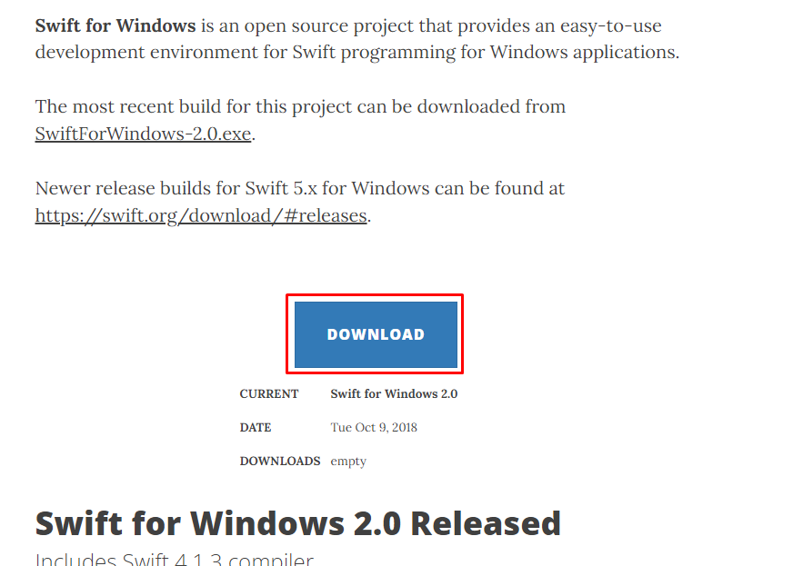

Conteúdo do Módulo 1
Bem-vindo ao Módulo 1 do curso! Neste módulo, você aprenderá sobre o Histórico, Características, Instalação, Estruturas de controle, Variáveis, Operadores, tipos de dados, funções, Arrays e Exemplos básicos de Programação.
Histórico
Foi apresentada em 2014 como um sucessor para Objective-C, porém mais segura, rápida e expressiva, hoje em dia Swift pode ser usado para desenvolver programas para Windows, Linux e cloud services (além das plataformas da Apple - iOS, iPadOS, macOS, watchOS e tvOS). Assim como Kotlin e Rust, Swift é compilado para machine code usando LLVM toolchain, porém também permite execução por meio de Read-Eval-Print-Loop para escrever e testar código em tempo real, sem a necessidade de recompilar.
Características
O Swift é uma linguagem de programação de código aberto (open source)
Você pode até construir soluções back-end utilizando Swift com o auxílio de algum framework, como o Vapor ou o Kitura.
O Swift é uma linguagem orientada a objetos, além de ser a primeira linguagem orientada a protocolos.
linguagem fortemente tipada.
Instalação
Vá neste site
https://swiftforwindows.github.io/
clique em download
execute o instalador
next, I agree, install

instalado :D
Estruturas de controle
Em linguagem Swift, assim como em muitas outras linguagens de programação, existem três principais estruturas de controle que permitem controlar o fluxo de execução do código: estruturas condicionais, loops (estruturas de repetição) e controle de transferência. Vou explicar brevemente cada uma delas:
1-Estruturas Condicionais: As estruturas condicionais permitem que você execute um bloco de código somente se uma determinada condição for verdadeira. Em Swift, as principais estruturas condicionais são:
a. if: Executa um bloco de código se uma condição for verdadeira.
if condition {
// Código a ser executado se a condição for verdadeira
}
b. if-else: Executa um bloco de código se a condição for verdadeira e outro bloco se a condição for falsa.
if condition {
// Código a ser executado se a condição for verdadeira
} else {
// Código a ser executado se a condição for falsa
}
c. if-else if-else: Permite testar várias condições em sequência.
if condition1 {
// Código a ser executado se a primeira condição for verdadeira
} else if condition2 {
// Código a ser executado se a segunda condição for verdadeira
} else {
// Código a ser executado se nenhuma das condições anteriores for verdadeira
}
2-Loops (Estruturas de Repetição): As estruturas de repetição permitem executar um bloco de código várias vezes. Em Swift, temos os seguintes tipos de loops:
a. for-in: Itera sobre uma sequência (como um intervalo de números, uma coleção, etc.).
for item in sequence {
// Código a ser executado para cada item na sequência
}
b. while: Executa um bloco de código enquanto uma condição for verdadeira.
while condition {
// Código a ser executado enquanto a condição for verdadeira
}
c. repeat-while: Executa um bloco de código pelo menos uma vez e, em seguida, continua a executá-lo enquanto a condição for verdadeira.
repeat {
// Código a ser executado pelo menos uma vez
} while condition
3-Controle de Transferência: O controle de transferência permite que você altere o fluxo de execução do código de maneira controlada. Em Swift, alguns comandos são:
a. break: Encerra imediatamente o loop ou switch mais interno.
b. continue: Pula para a próxima iteração do loop.
c. return: Encerra a execução da função e retorna um valor, se aplicável.
d. fallthrough: Usado em um switch para permitir que o fluxo de controle continue para o próximo caso após um caso correspondente.
Essas são as principais estruturas de controle em linguagem Swift. Com elas, você pode criar programas que tomam decisões com base em condições, repetem ações várias vezes e controlam o fluxo do código de maneira mais avançada.
Variáveis
Em Swift, você pode declarar variáveis usando a palavra-chave var. As variáveis permitem armazenar valores que podem ser alterados ao longo do tempo. Aqui está a sintaxe básica para declarar uma variável em Swift:
var nomeDaVariavel: TipoDaVariavel = valorInicial
Aqui estão os componentes principais da declaração de uma variável em Swift:
a. var: Palavra-chave para declarar uma variável.
b. nomeDaVariavel: Substitua isso pelo nome que você deseja dar à sua variável.
c. TipoDaVariavel: O tipo de dado que a variável vai armazenar, como Int, String, Double, etc.
d. valorInicial: Valor inicial opcional para a variável. Você pode omitir isso se quiser declarar a variável sem atribuir um valor inicial.
Exemplos de declaração de variáveis em Swift:
var idade: Int = 25
var nome: String = "João"
var altura: Double = 1.75
var isActive: Bool = true
Swift também possui inferência de tipo, o que significa que o compilador pode automaticamente determinar o tipo da variável com base no valor inicial atribuído:
var quantidade = 10 // O compilador inferirá que quantidade é do tipo Int
var mensagem = "Olá, Swift!" // O compilador inferirá que mensagem é do tipo String
Além disso, você pode modificar o valor de uma variável após a declaração:
var contador = 0
contador = contador + 1 // Incrementa o valor da variável contador para 1
Lembre-se de que, em Swift, há também a diferença entre variáveis (var) e constantes (let). Enquanto variáveis permitem que você altere seus valores após a inicialização, constantes são valores imutáveis e são declarados usando a palavra-chave let.
let pi = 3.14159
As variáveis são fundamentais na programação, pois permitem armazenar e manipular dados de maneira dinâmica durante a execução do programa.
Operadores
Swift oferece uma variedade de operadores que você pode usar para realizar operações em variáveis e valores. Esses operadores podem ser agrupados em várias categorias, como aritméticos, de atribuição, de comparação, lógicos, etc. Vou fornecer exemplos de alguns operadores das principais categorias:
1- Operadores Aritméticos:
a. +: Adição
b. -: Subtração
c. *: Multiplicação
d. /: Divisão
e. %: Módulo (resto da divisão)
Exemplo:
let a = 10
let soma = a + b // 15
let b = 5
let multiplicacao = a * b // 50
let subtracao = a - b // 5
let resto = a % b // 0
let divisao = a / b // 2
2- Operadores de Atribuição:
a. =: Atribuição
b. -=: Atribuição de subtração (decremento)
c. +=: Atribuição de adição (incremento)
d. /=: Atribuição de divisão
e. *=: Atribuição de multiplicação
Exemplo:
var x = 10
x += 5 // x agora é 15
x -= 3 // x agora é 12
x *= 2 // x agora é 24
x /= 4 // x agora é 6
3- Operadores de Comparação:
a. ==: Igual a
b. <: Menor que
c. !=: Diferente de
d. <=: Menor ou igual a
e. >: Maior que
f. >=: Maior ou igual a
Exemplo:
let p = 10
let isEqual = p == q // false
let q = 5
let isLessThan = p < q // false
let isNotEqual = p != q // true
let isGreaterThan = p > q // true
4- Operadores Lógicos:
a. &&: E lógico (AND)
b. !: Negação lógica (NOT)
c. ||: Ou lógico (OR)
Exemplo:
let isTrue = true
let andResult = isTrue && isFalse // false
let isFalse = false
let notResult = !isTrue // false
let orResult = isTrue || isFalse // true
5- Operadores de Intervalo:
a. ...: Intervalo fechado (inclusive)
b. ..<: Intervalo semiaberto (exclui o último valor)
Exemplo:
let closedRange = 1...5 // 1, 2, 3, 4, 5
let halfOpenRange = 1..<5 // 1, 2, 3, 4
Esses são apenas alguns exemplos dos operadores disponíveis em Swift. Eles são essenciais para realizar várias operações em seu código e manipular valores de maneira eficaz.
tipos de dados
Swift possui diversos tipos de dados para representar diferentes tipos de informações. Os tipos de dados em Swift podem ser agrupados em várias categorias, incluindo tipos numéricos, tipos de texto, tipos booleanos, tipos de coleção, tipos opcionais, entre outros. Vou listar alguns dos tipos de dados mais comuns em cada categoria:
1- Tipos Numéricos:
a. Int: Números inteiros (positivos, negativos e zero).
b. Double: Números de ponto flutuante de precisão dupla.
c. UInt: Números inteiros sem sinal (apenas positivos e zero).
d. Decimal: Números de ponto flutuante de alta precisão.
e. Float: Números de ponto flutuante de precisão simples.
2- Tipos de Texto:
a. Character: Um único caractere.
b. String: Sequência de caracteres.
3- Tipos Booleanos:
Bool: Representa verdadeiro (true) ou falso (false).
4- Tipos de Coleção:
a. Dictionary: Uma coleção de pares chave-valor, onde as chaves são únicas.
b. Array: Uma coleção ordenada de elementos do mesmo tipo.
c. Set: Uma coleção não ordenada de valores únicos.
5- Tipos de Dados Compostos:
a. Tuple: Uma coleção de valores de tipos diferentes, agrupados em uma única unidade.
b. Class: Uma classe é um tipo de referência, usado para criar objetos mais complexos.
c. Struct: Um tipo de dado composto que permite agrupar valores de diferentes tipos.
d. Enum: Um tipo de dado que define um conjunto de valores possíveis.
6- Tipos Opcionais:
Optional: Permite representar valores que podem estar presentes ou ausentes (nulo).
7- Tipos de Intervalo:
a. ClosedRange: Representa um intervalo fechado entre dois valores.
b. HalfOpenRange: Representa um intervalo semiaberto entre dois valores.
8- Outros Tipos Especiais:
Any: Representa um valor de qualquer tipo, incluindo tipos de dados personalizados.
AnyObject: Representa um valor de qualquer classe.
Never: Representa um tipo de valor que nunca é retornado.
Além desses tipos, Swift também permite a definição de tipos de dados personalizados por meio da criação de estruturas, classes e enumerações. Esses tipos personalizados podem ter propriedades e métodos que definem seu comportamento e funcionalidade.
Lembre-se de que Swift é uma linguagem de programação forte com verificação de tipo, o que significa que você precisa especificar explicitamente o tipo de dados que está utilizando. Isso ajuda a evitar erros de tipo e a tornar seu código mais seguro e legível.
funções
Em Swift, as funções são blocos de código reutilizáveis que podem receber argumentos, executar ações específicas e retornar valores, se necessário. Elas são fundamentais para organizar e modularizar o código, permitindo que você divida tarefas complexas em partes mais gerenciáveis. Aqui estão os principais conceitos sobre funções em Swift:
Sintaxe de Declaração de Função:
Aqui está a sintaxe básica para declarar uma função em Swift:
func nomeDaFuncao(parametros) -> TipoDeRetorno {
// Corpo da função
return valorDeRetorno
}
a. func: Palavra-chave para declarar uma função.
b. nomeDaFuncao: Substitua isso pelo nome que você deseja dar à sua função.
c. parametros: Lista de argumentos que a função recebe, separados por vírgula.
d. TipoDeRetorno: O tipo de dado que a função irá retornar. Use Void se a função não retornar nada.
e. return: Palavra-chave usada para retornar um valor da função.
f. valorDeRetorno: O valor que a função irá retornar, conforme o tipo de retorno especificado.
1- Exemplo de Função Simples:
Aqui está um exemplo de uma função simples que calcula a soma de dois números:
func soma(a: Int, b: Int) -> Int {
return a + b
}
let resultado = soma(a: 5, b: 3) // resultado é 8
2- Funções sem Retorno:
Se uma função não precisa retornar um valor, você pode usar Void ou simplesmente omitir o tipo de retorno:
func saudacao(nome: String) {
print("Olá, \(nome)!")
}
saudacao(nome: "Alice") // Imprime "Olá, Alice!"
3- Parâmetros Nomeados:
Em Swift, os parâmetros de função são nomeados por padrão, o que torna a chamada da função mais legível:
func exibir(nome: String, idade: Int) {
print("Nome: \(nome), Idade: \(idade)")
}
exibir(nome: "João", idade: 30) // Imprime "Nome: João, Idade: 30"
4- Parâmetros com Rótulos Externos:
Você também pode usar rótulos externos para melhorar a clareza ao chamar funções:
func saudar(pessoa nome: String) {
print("Olá, \(nome)!")
}
saudar(pessoa: "Carlos") // Imprime "Olá, Carlos!"
5- Funções Opcionais:
Você pode definir parâmetros opcionais em uma função, usando o tipo Tipo? para indicar que o valor pode ser nulo:
func saudar(nome: String?) {
if let nome = nome {
print("Olá, \(nome)!")
} else {
print("Olá, pessoa desconhecida!")
}
}
saudar(nome: "Ana") // Imprime "Olá, Ana!"
saudar(nome: nil) // Imprime "Olá, pessoa desconhecida!"
Essas são apenas algumas das muitas possibilidades e recursos relacionados a funções em Swift. Elas desempenham um papel fundamental no desenvolvimento de aplicativos, permitindo que você modularize e reutilize o código de forma eficaz.
Arrays
Em Swift, um array é uma coleção ordenada de elementos do mesmo tipo. Os arrays permitem armazenar múltiplos valores em uma única estrutura, acessíveis por meio de índices. Aqui estão os principais conceitos sobre arrays em Swift:
Sintaxe de Declaração de Array:
Aqui está a sintaxe básica para declarar um array em Swift:
var nomeDoArray: [TipoDoElemento] = []
a. var: Palavra-chave para declarar uma variável.
b. nomeDoArray: O nome que você deseja dar ao array.
c. TipoDoElemento: O tipo de dado dos elementos que o array irá conter.
d. []: Colchetes vazios usados para criar um array vazio.
1- Exemplo de Array:
Aqui está um exemplo de declaração de array e adição de elementos:
var numeros: [Int] = [1, 2, 3, 4, 5]
2- Adição e Acesso a Elementos:
Você pode adicionar elementos a um array usando o método append(_:) ou adicionando diretamente ao final do array:
numeros.append(6) // Adiciona o número 6 ao final do array
numeros += [7, 8] // Adiciona os números 7 e 8 ao final do array
Para acessar elementos em um array, use índices baseados em zero:
let primeiroNumero = numeros[0] // Primeiro elemento (1)
let terceiroNumero = numeros[2] // Terceiro elemento (3)
3- Tamanho e Verificação de Vazio:
Você pode obter o número de elementos em um array usando a propriedade count:
let quantidadeDeNumeros = numeros.count // 8
Você também pode verificar se um array está vazio usando o método isEmpty:
let estaVazio = numeros.isEmpty // false
4- Iteração em um Array:
Você pode iterar sobre os elementos de um array usando um loop for-in:
for numero in numeros {
print(numero)
}
5- Métodos de Array:
Swift fornece diversos métodos úteis para manipular arrays, como map, filter, reduce, entre outros. Esses métodos permitem realizar operações comuns de maneira eficiente e expressiva.
let numerosDobrados = numeros.map { $0 * 2 } // [2, 4, 6, 8, 10, 12, 14, 16]
let numerosPares = numeros.filter { $0 % 2 == 0 } // [2, 4, 6, 8]
let somaDosNumeros = numeros.reduce(0, +) // 36
Esses são apenas alguns dos conceitos e recursos relacionados a arrays em Swift. Eles são muito úteis para armazenar e manipular conjuntos de dados em seus aplicativos.
Exemplos básicos de Programação
1- Variáveis:
var idade: Int = 25
var nome: String = "Maria"
var altura: Double = 1.65
var isActive: Bool = true
idade += 5 // idade agora é 30
2- Estruturas Condicionais:
let temperatura = 28
if temperatura > 30 {
print("Está muito quente!")
} else if temperatura >= 20 {
print("O clima está agradável.")
} else {
print("Está um pouco frio.")
}
3- Loops:
for numero in 1...5 {
print(numero)
}
var contador = 0
while contador < 3 {
print("Contador: \(contador)")
contador += 1
}
4- Funções:
func saudacao(nome: String) {
print("Olá, \(nome)!")
}
func soma(a: Int, b: Int) -> Int {
return a + b
}
saudacao(nome: "João") // Imprime "Olá, João!"
let resultado = soma(a: 3, b: 7) // resultado é 10
5- Arrays:
var numeros: [Int] = [1, 2, 3, 4, 5]
numeros.append(6)
numeros += [7, 8]
for numero in numeros {
print(numero)
}
let primeiroNumero = numeros[0] // 1